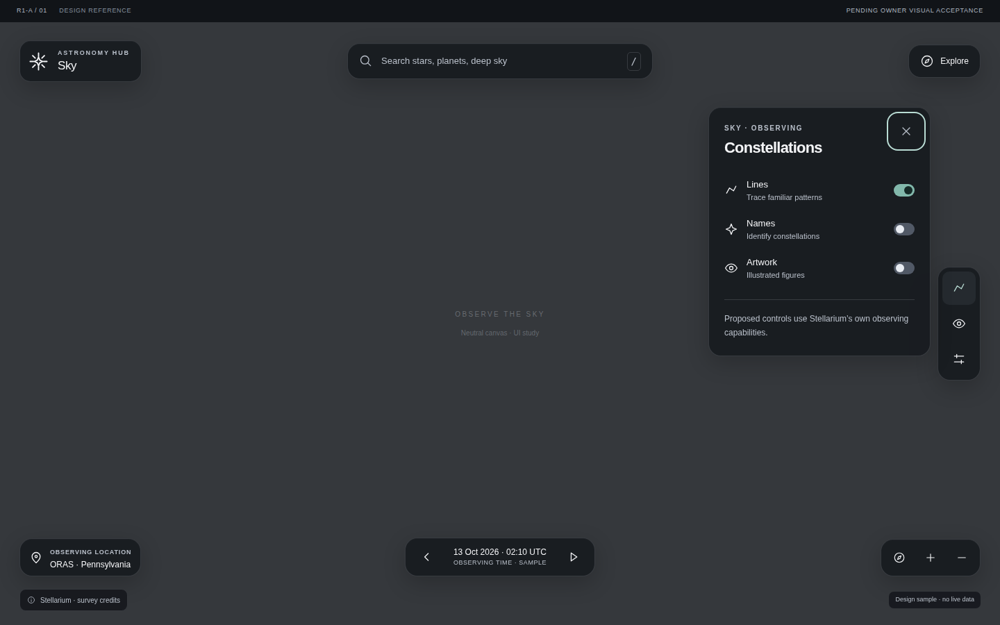
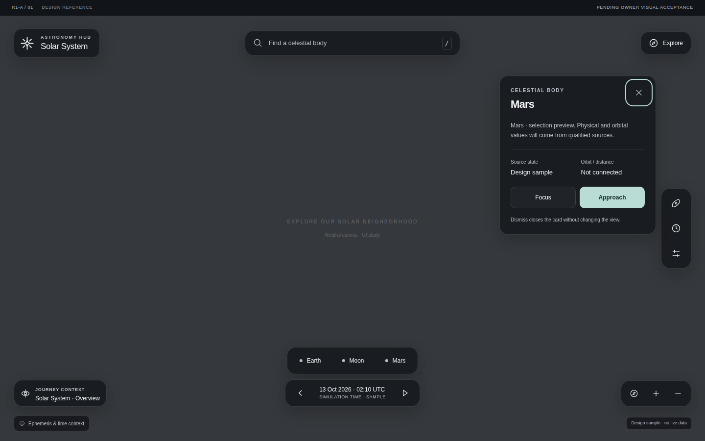
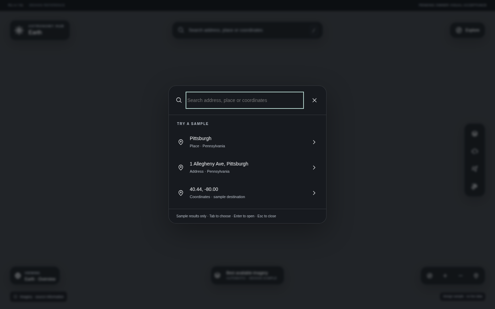
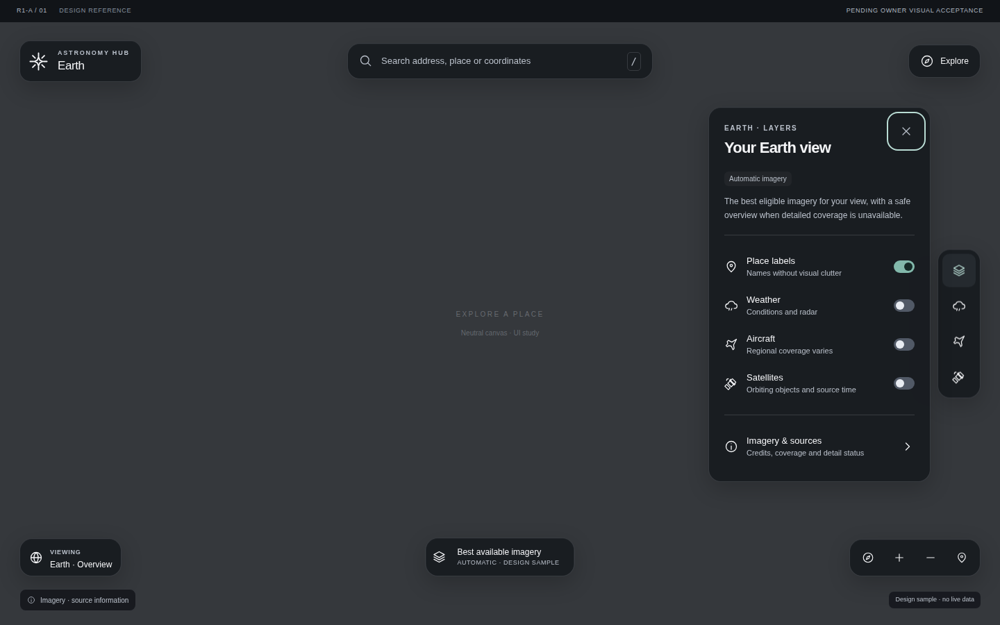
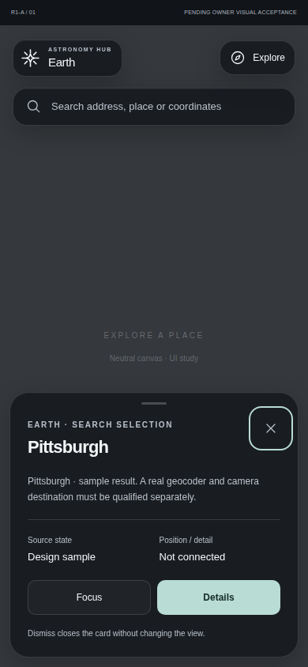
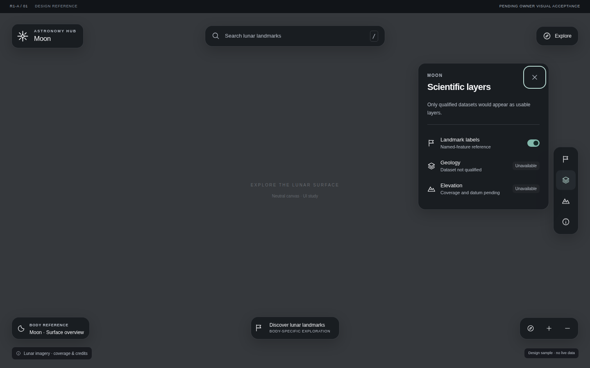
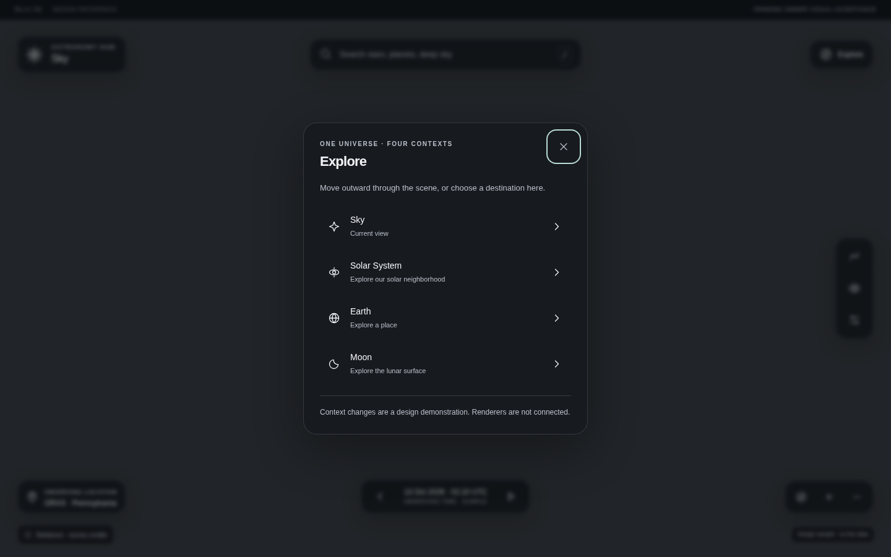
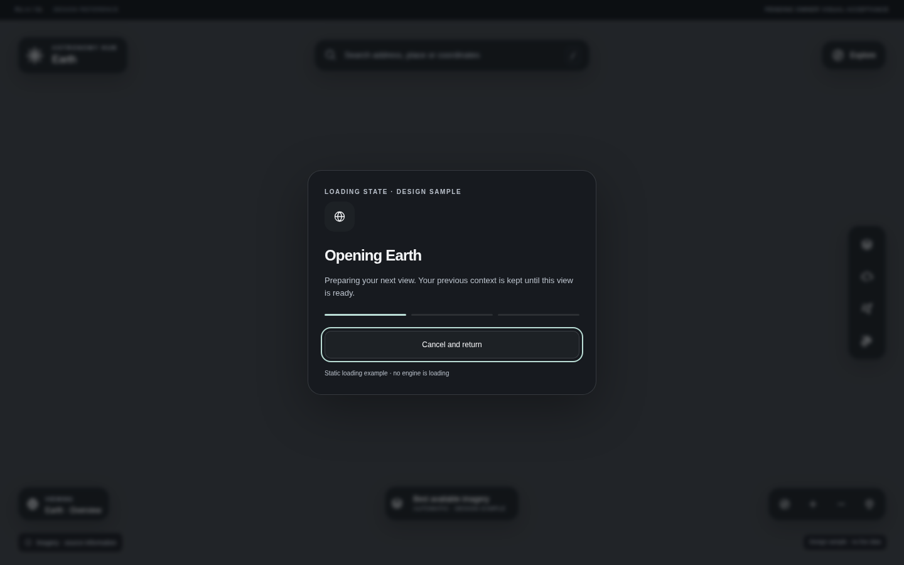
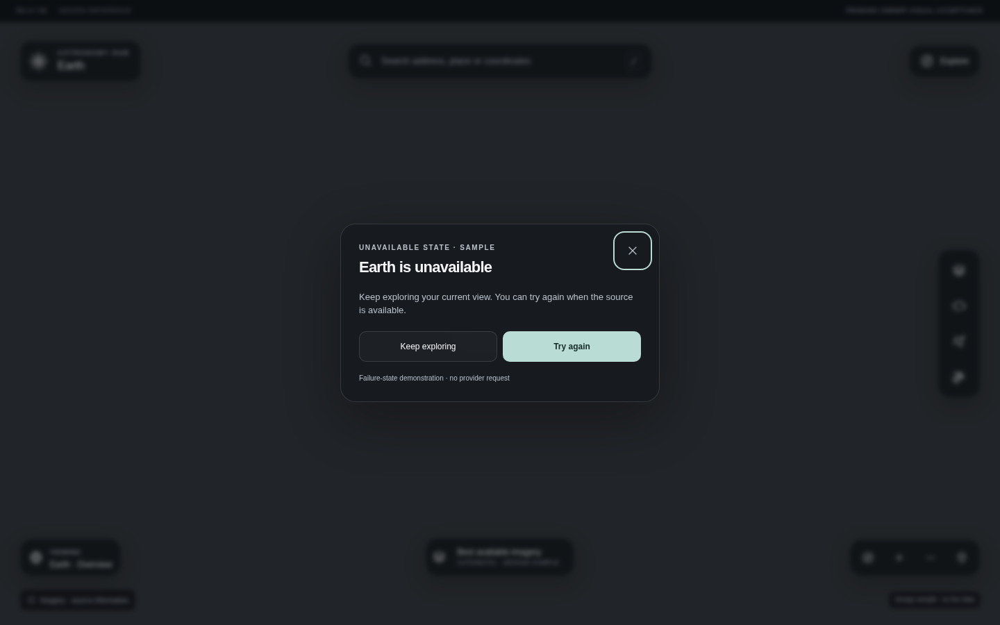

One universe.
A quieter interface.
Four contexts, one visual language. The scene stays open; the tools adapt to where you are. Review the interface on neutral canvases, then open any layout to explore its proposed interactions.
60e92336f7d715fc83d174f07ac350573d0e1953; see the attributed browser ledger. Interactive pages include later Sky-control and focus corrections whose browser qualification is BLOCKED_ENVIRONMENT. These screenshots do not prove those changes.01 / Desktop layouts
1440 × 900 · actual browser captures · click to interact
02 / Mobile layouts
390 × 844 · shared components, touch-sized controls
03 / Context, progressively revealed
One panel at a time · dismissal returns focus






04 / A journey with a way back
Gesture first · Explore and keyboard alternatives
Sky
Zoom outward toward Earth. Preserve observer, time and selection for return.
Open ExploreEarth
Continue outward to Solar System context. Earth feed timestamps remain distinct.
Handoff stateSolar System
Select the Moon, focus, then approach. Each transition has a cancel path.
Try body selectionMoon
Enter a qualified surface view. Return to body context with Explore or Back.
Open surface layout


05 / Readable in changing light
Neutral surfaces · no scene imagery or external assets